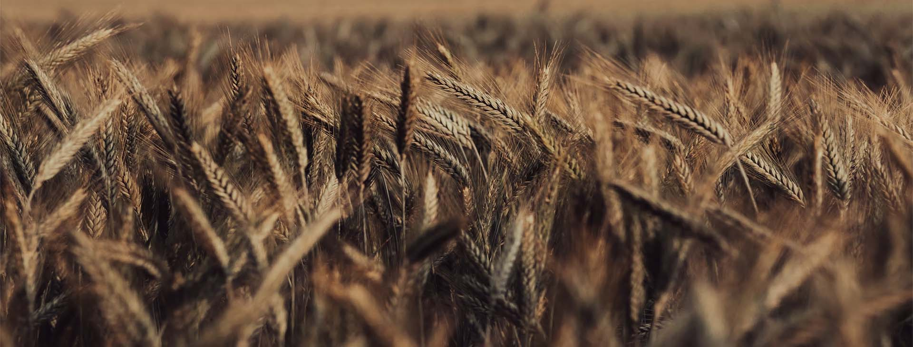
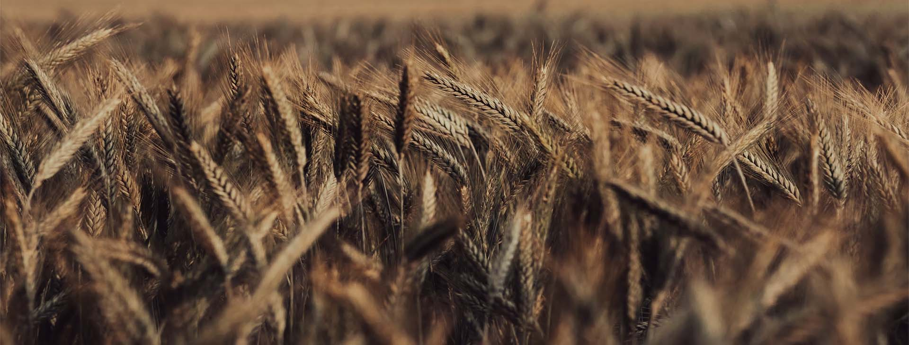
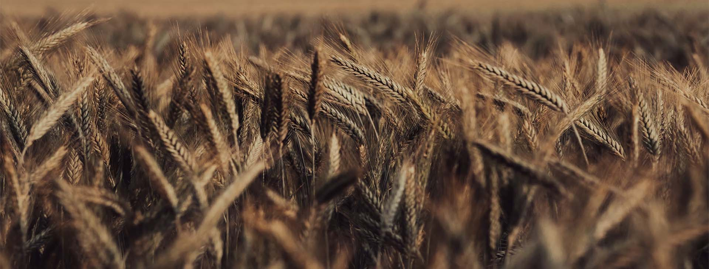
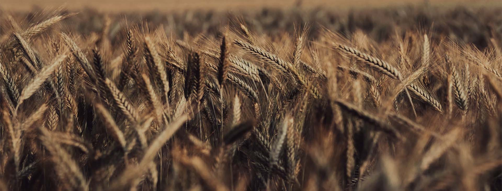

AMO's historie går langt tilbage og AMO er i dag en af de største melproducenter i Danmark
Det hele startede tilbage i 1928, hvor
Dampmøllen Victoria i Odense lancerede
Amo-mærket, og selv om det forbindes med
omsorgsfuldhed og kærlighed til sine nærmeste,
så har navnet faktisk ikke rod i det latinske ord at
elske, sådan som mange ellers tror. Navnet opstod
nemlig som en forkortelse for Amerikansk Mel I
Odense.
Dengang var det amerikanske mel kendt for sin gode kvalitet og gode
bageegenskaber, og derfor blev det brugt aktivt i markedsføringen.
I dag er der ikke længere amerikansk hvede i Amo-poserne, da der nu dyrkes
tilsvarende gode kvaliteter på vores breddegrader.
På trods af Amos succes har hvedemelsmærket stadig en stærk markedsposition på grund af sin høje kvalitet. Amos kvalitet har gjort det muligt for hjemmebagere at opnå deres bedste bageresultater. Vi har altid forstået at følge med tiden og har faktisk kunnet leve op til de nye krav og ønsker, som hjemmebagerene er kommet med. AMO mærket har taget næste skridt og er begyndt at anvende genanvendelig indpaking af produkterne.